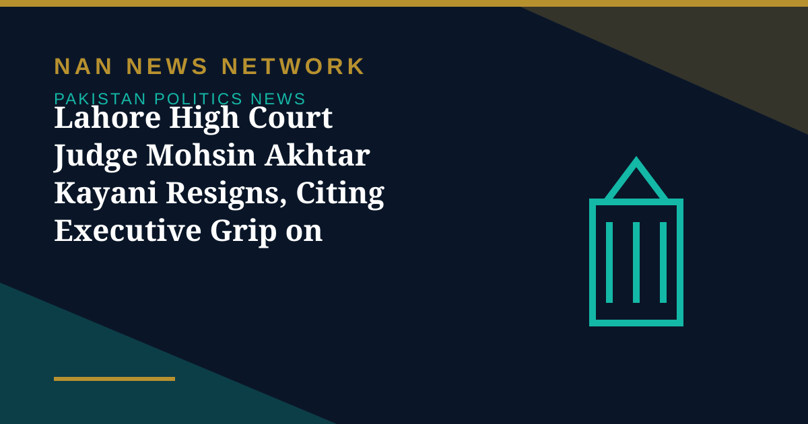

Lahore High Court Judge Mohsin Akhtar Kayani Resigns, Citing Executive Grip on Judiciary

A senior Pakistani judge resigned on Wednesday, accusing the executive of increasing its control over the judiciary and warning that recent constitutional amendments had undermined the independence of the country's high courts. Justice Mohsin Akhtar Kayani of the Lahore High Court said his conscience no longer permitted him to remain on the bench, describing the decision as painful after more than a decade of judicial service.
What the resignation letter says
In a letter addressed to Pakistan's president, reported by Dawn and Geo News, Kayani cited personal reasons, including health concerns following recent surgery, alongside serious concerns about the direction of the judicial system. "In my considered view, the changes introduced through the Twenty-sixth and Twenty-seventh Constitutional Amendments have compromised the independence and institutional integrity of the High Courts," he wrote. "I have witnessed what I regard as the executive's growing control over judicial institutions, extending to the appointment and transfer of judges."
Kayani said he was particularly troubled by the plight of ordinary people seeking justice, arguing that their needs had increasingly been neglected, and that such interference had seriously eroded public confidence in judicial independence and the fairness of legal proceedings. His resignation lands in a charged moment for Pakistan's judiciary, where debate over the amendments and the balance between parliament and the courts has become one of the defining arguments of the year.
Sources: Gulf News, Dawn and Geo News reports, October 28, 2026
More on Pakistan Politics News
- Pakistan Says Afghan Firing Kills One in South Waziristan Border District
- Pakistan Marks Kashmir Black Day With Rallies Across the Country
- National Assembly Passes Seven Private Members' Bills, Sends Six to Committees
- Pakistan Strongly Condemns Houthi Missile Attacks Near Makkah and Madinah
- Pakistan, Saudi Arabia and Turkiye Reported to Hold Tehran Talks on De-escalation
- Pakistan LPG Shortage Worsens as Iran Border Crossings Close
- Pakistan Ends Machine-Readable Passports and Switches Fully to E-Passports
- Pakistan Calls for a Fairer Global Order at the United Nations